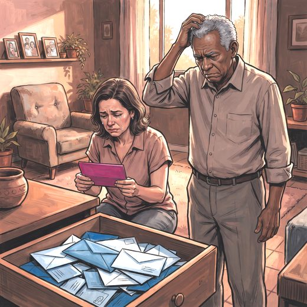

Consulta rápida à beira do leito
Condutas, doses e interações.
Referências da aula · 2
- Miguel ACC, Martins-Teixeira L, Godoy C, et al. Inequities in dementia diagnosis: evidence from the ELSI-Brazil study. Int J Geriatr Psychiatry. 2026;41(4):e70219. doi:10.1002/gps.70219. PMID 42033766.PubMedDOI
- Livingston G, Huntley J, Liu KY, et al. Dementia prevention, intervention, and care: 2024 report of the Lancet standing Commission. Lancet. 2024;404(10452):572-628. PMID 39096926. doi:10.1016/S0140-6736(24)01296-0.PubMedDOI